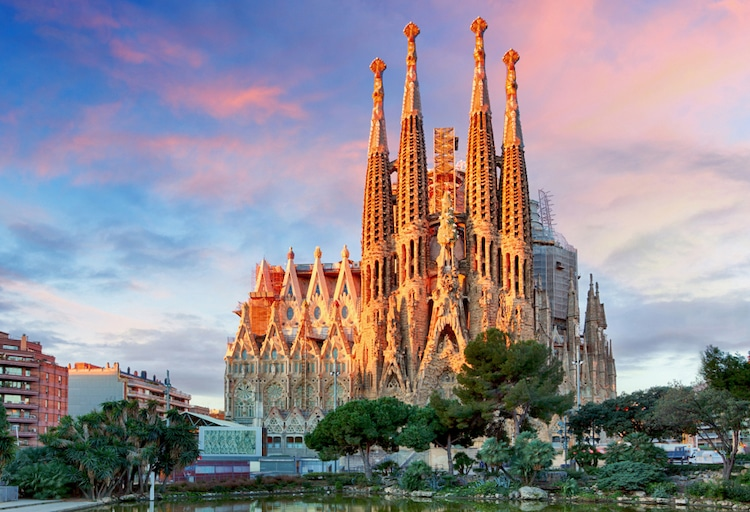
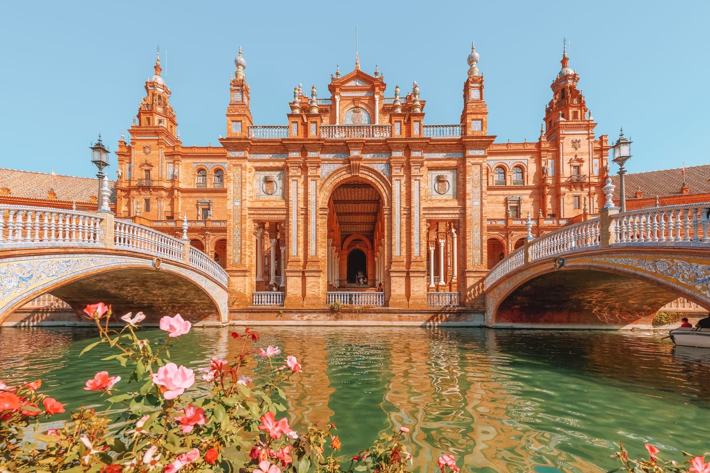
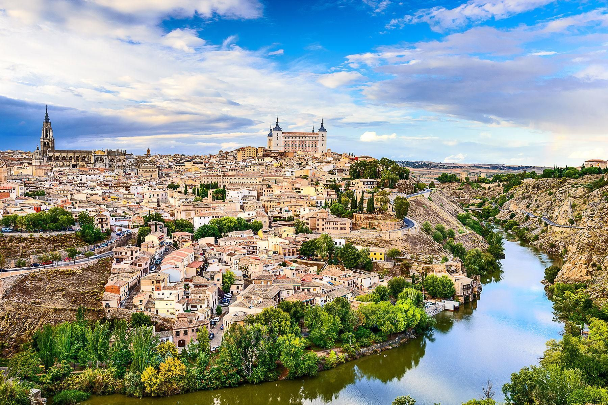
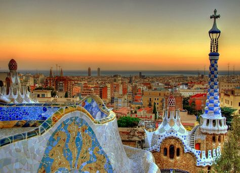
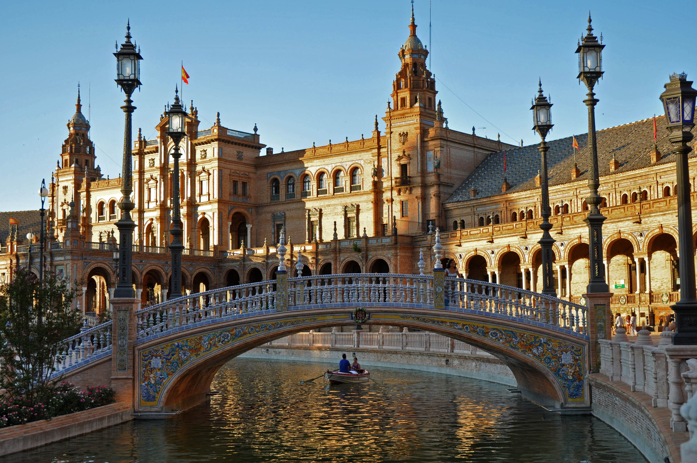
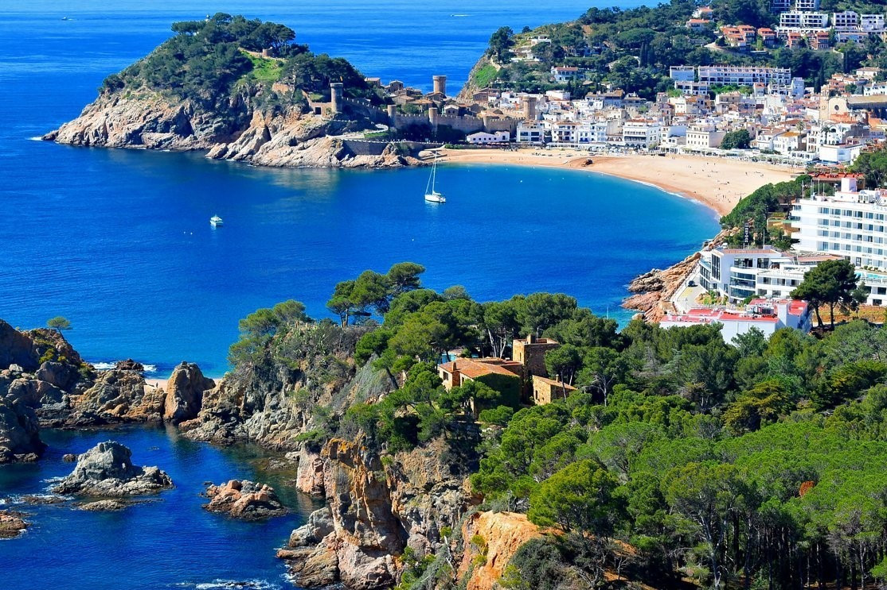
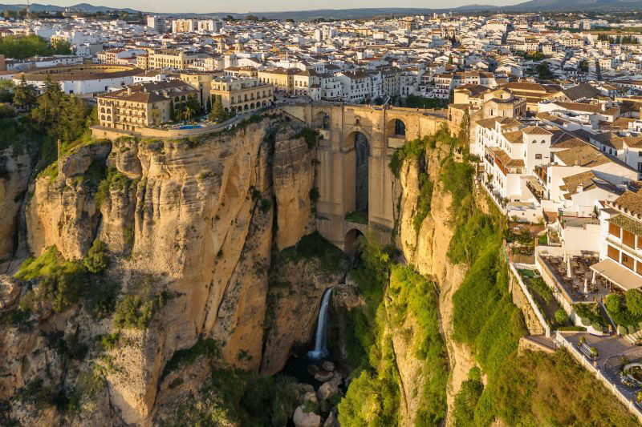
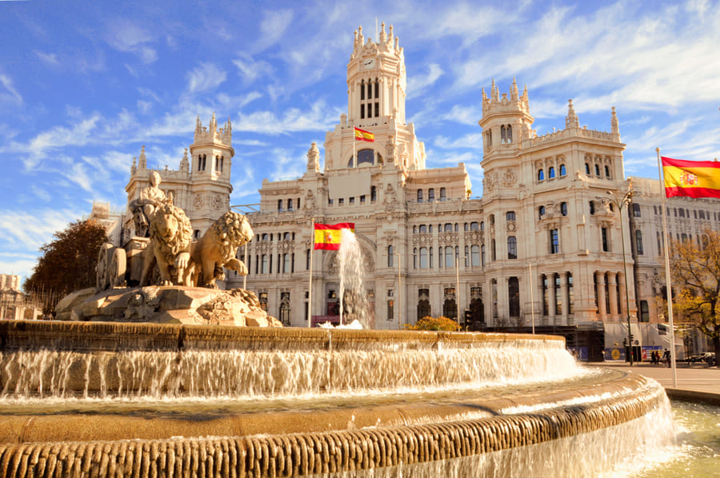
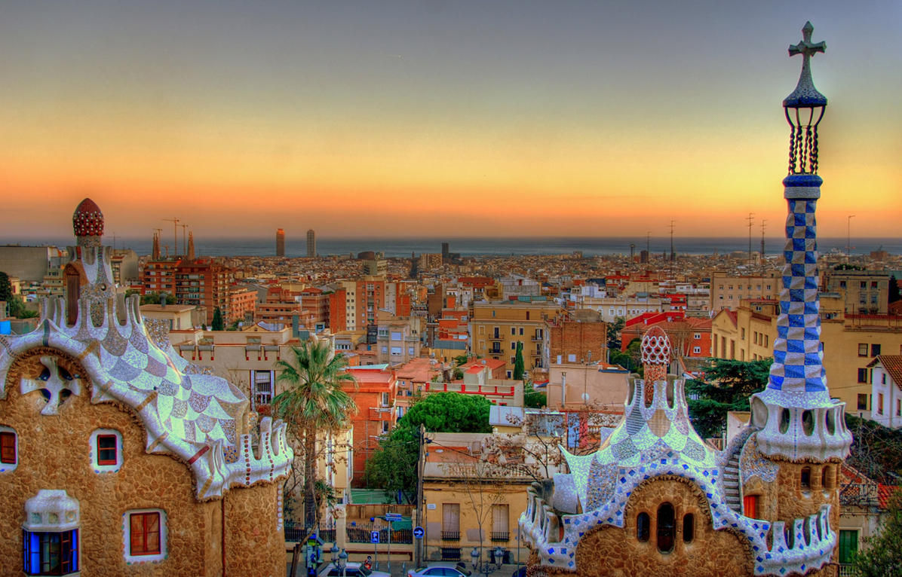

Собор Сантьяго-де-Компостела в Галисии. Собор Сантьяго-де-Компостела в Галисии.

Парк Гуэль в Барселоне. Ещё один шедевр Гауди, где можно увидеть сказочные мозаики, изогнутые лавочки и виды на город.

Мескита в Кордове. Мечеть-собор, уникальное сочетание арабской и христианской архитектуры.

Музей Прадо в Мадриде. Один из лучших художественных музеев мира, где можно увидеть картины Веласкеса, Гойи, Босха и других великих мастеров.

Акведук Сеговии. Настоящее чудо инженерии времён Римской империи, каменный акведук сохранился более чем за 2000 лет и до сих пор впечатляет своей грандиозностью.

Коста-дель-Соль в Андалусии. Не только пляжи и курорты, но и белые деревни в горах, старинные крепости и прогулки по узким улочкам старых городков.

Вулкан Тейде на Тенерифе. Самая высокая точка Испании и один из самых красивых национальных парков Европы.

Мескита в Кордове. Мечеть-собор, уникальное сочетание арабской и христианской архитектуры.

Город искусств и наук в Валенсии. Футуристический комплекс, который выглядит как декорации к фильму о будущем.